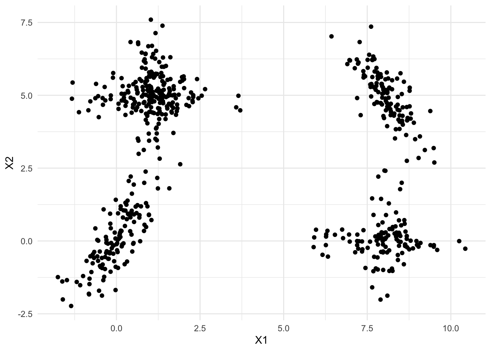
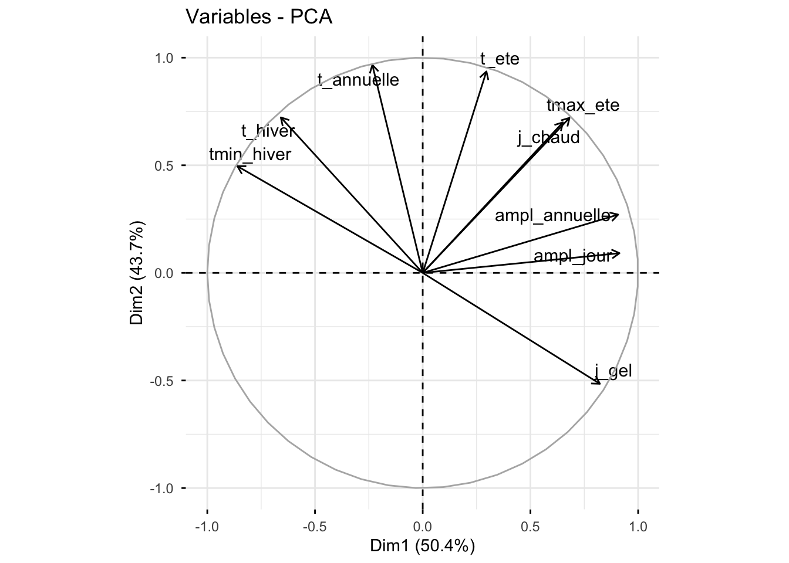
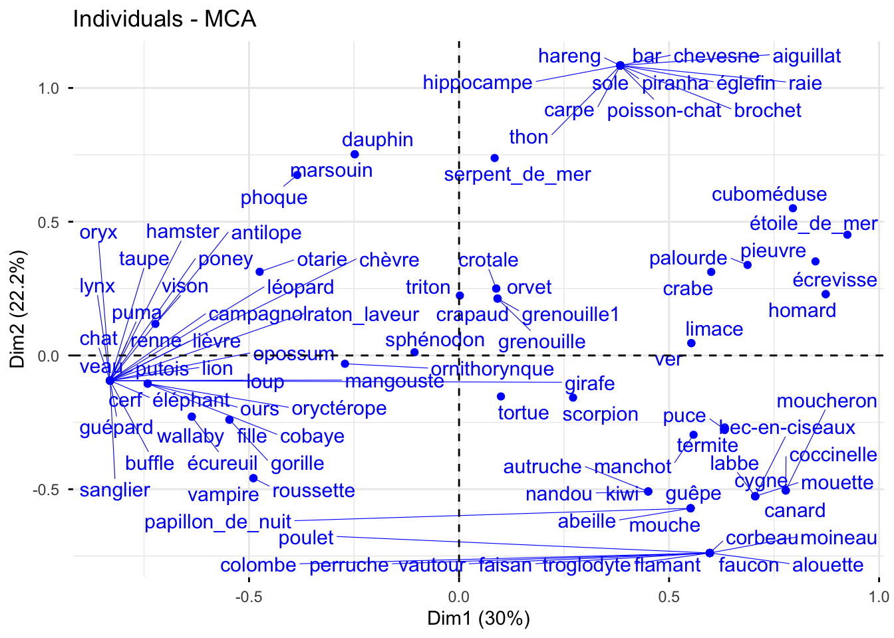

## Pour faire le TP
library(mclust)
library(Rmixmod)
library(ggplot2)
library(gridExtra)
library(FactoMineR)
library(factoextra)
library(reshape2)
library(ggalluvial)
library(leaflet)
library(sf)
library(dplyr)TP 4 - Classification par modèles de mélanges
Sujet
L’objectif de ce TP est d’illustrer les notions abordées autour des modèles de mélanges.
Les librairies R nécessaires pour ce TP :
1 Mélanges gaussiens
1.1 Application sur données simulées uni-dimensionnelles
Question : A l’aide du code suivant, simulez un jeu de données selon un mélange gaussien en \(3\) composantes unidimensionnel. Faites varier les différents paramètres (proportions, moyennes et variances).
set.seed(1234)
a<- ...
b<- ...
mu<-c(-a,0,a) # les moyennes \mu_k
sigma<-c(b,0.5,b) # les \sigma_k
prop<-c(0.2,0.3,0.5)
n<- ...
Z<-rmultinom(....)
X<-data.frame(X=c(rnorm(...),
rnorm(...),
rnorm(...)))
labeltrue<- # vecteur des vrais labelsaux<-seq(-(a+4),a+4,0.01)
Y<-data.frame(x=aux,
y1=(prop[1]*dnorm(aux,mu[1],sigma[1])),
y2=(prop[2]*dnorm(aux,mu[2],sigma[2])),
y3=(prop[3]*dnorm(aux,mu[3],sigma[3])))
gvrai<-ggplot(X,aes(x=X))+
geom_histogram(aes(y = after_stat(density)),bins=100,fill = "grey70", colour = "black")+
geom_line(aes(x=x,y=y1),data=Y,col="red")+
geom_line(aes(x=x,y=y2),data=Y,col="blue")+
geom_line(aes(x=x,y=y3),data=Y,col="green")+
theme_minimal()
gvraiQuestion : Estimez les paramètres d’un mélange à \(K=3\) classes à l’aide de la fonction Mclust() de la librairie mclust. Comparez la classification obtenue avec les vrais labels.
# A completer
res<-Mclust(...)
table(...,...)
adjustedRandIndex(...,...)Question : Représentez la densité de mélange estimée sur l’histogramme de l’échantillon simulé. Vous pouvez vous aider de la fonction dnorm() appliquée avec les différentes estimations de paramètres par composante.
# A completer
# dans y_k <- \pi_k \times \phi(x; \mu_k,\sigma_k^2)
MelEstim<-data.frame(x=aux,
y1=.....,
y2=.....,
y3=......)
MelEstim<-data.frame(MelEstim,Somme=apply(MelEstim[,2:4],1,sum))
gMelEst<-ggplot(X,aes(x=X))+
geom_histogram(aes(y = after_stat(density)),bins=100,fill = "grey70", colour = "black")+
geom_line(aes(x=x,y=y1),data=MelEstim,col="red")+
geom_line(aes(x=x,y=y2),data=MelEstim,col="green4")+
geom_line(aes(x=x,y=y3),data=MelEstim,col="blue")+
geom_line(aes(x=x,y=Somme),data=MelEstim,col="yellow",linetype = "dashed",linewidth=1.5)+
theme_minimal()
gMelEstQuestion : Calculez les probabilités a posteriori d’appartenance des individus à chacune des trois classes et tracez-les graphiquement.
# dans p mettre le vecteur des proba a posteriori d'appartenance (t_{11},\ldots,t_{n1},t_{12},\ldots,t_{n3})
MelProba<-data.frame(x=rep(aux,3),
p= c(..., ..., ..),
clust=as.factor(rep(c(1,2,3),each=length(aux))))
gprobapost<-ggplot(MelProba,aes(x=x,y=p,col=clust))+
geom_line()+
theme_minimal()
gprobapostQuestion : Tracez les boxplots des probabilités d’appartenance maximales par classe. Vous pouvez vous aider de la fonction apply().
df<-data.frame(clust=...,probamax=...)
gprobamax<-ggplot(df,aes(x=clust,y=probamax))+geom_boxplot()
grid.arrange(gvrai,gMelEst,gprobapost,gprobamax,ncol=2)1.2 Application sur des données simulées dans \(\mathbb{R}^2\)
On va ici utiliser les données simulées “ex4.1” disponibles dans la librairie mclust. Ces données sont simulées selon un mélange de densités gaussiennes, proposées dans Baudry et al (2010). L’objectif est d’étudier l’impact du choix des formes des mélanges considérées et de la différence d’objectif entre les critères BIC et ICL. On va au travers de ce jeu de données simulées simple appréhender la manipulation des fonctions pour le clustering par mélanges gaussiens avec R.
On commence ici par charger les données :
library(mclust)
data(Baudry_etal_2010_JCGS_examples)
Data<-ex4.1
ggplot(Data,aes(x=X1,y=X2))+
geom_point()+
theme_minimal()
1.2.1 Mélanges gaussiens diagonaux
Dans cette section, on va considérer une collection de modèles de mélanges gaussiens avec un nombre de composantes \(K\) variant entre \(2\) et \(10\) et des matrices de variance-covariance diagonales.
Question : A l’aide de la fonction Mclust(), estimez les paramètres des mélanges gaussiens considérés. Vous pouvez consulter l’aide de la fonction mclustModelNames() pour le choix des formes des mélanges.
# A COMPLETER
resBICdiag<-Mclust(....)Question : A l’aide de la fonction fviz_mclust_bic(), visualisez le comportement du critère BIC sur la collection de modèles. Quel modèle est sélectionné ? Contrôlez à l’aide de summary(resBICdiag).
fviz_mclust(....,what=....)
summary(resBICdiag)Question : Tracez la classification obtenue sur le nuage de points (vous pouvez utiliser la fonction fviz_cluster()). Comment est obtenue cette classification à partir du mélange gaussien retenu ? Quels sont les effectifs par classe ? Contrôlez les probabilités a posterori d’appartenance.
# Visualisation du clustering
fviz_cluster(...)
# Effectifs par classe
table(....)
# Boxplot des probabilités a posteriori maximales
Aux<-data.frame(clust=..., proba=...)
ggplot(Aux,aes(x=clust,y=proba))+geom_boxplot()Question : Quel mélange gaussien est retenu avec le critère ICL ? Vous utiliserez la fonction mclustICL(). Etudiez la classification alors déduite.
resICL<-mclustICL(...)
summary(resICL)1.2.2 Toutes les formes de mélanges gaussiens
Question : Reprenez les questions de la section précédente en considérant ici toutes les formes de mélanges gaussiens. Commentez.
# A COMPLETER1.3 Etude des données de températures départementales
On reprend dans ce TP les données TemperaturesDepartements2018-2024.csv disponibles sur la page moodle du cours et déjà étudiées dans le TP sur les Kmeans. Pour chacun des \(n=96\) départements de France métropolitaine, on dispose de 9 indicateurs climatiques calculés à partir des températures journalières 2018-2024 (températures moyennes annuelle, d’hiver et d’été, moyenne des minimales d’hiver et des maximales d’été, amplitudes annuelle et journalière, nombres de jours de gel et de jours chauds) et des variables qualitatives region, littoral et massif pour l’interprétation.
On charge ici les données et on centre-réduit les variables quantitatives.
temp <- read.table("TemperaturesDepartements2018-2024.csv", header = TRUE, encoding = "UTF-8")
rownames(temp) <- temp$code_dep
temp <- temp[,-1]
temp$region <- as.factor(temp$region)
temp$littoral <- as.factor(temp$littoral)
temp$massif <- as.factor(temp$massif)
quanti <- 5:13
tempinit <- temp
temp[,quanti] <- scale(temp[,quanti],center=T,scale=T)
Xtemp <- temp[,quanti]
head(temp) departement region littoral massif
01 Ain Auvergne-Rhône-Alpes Intérieur Non
02 Aisne Hauts-de-France Intérieur Non
03 Allier Auvergne-Rhône-Alpes Intérieur Non
04 Alpes-de-Haute-Provence Provence-Alpes-Côte d'Azur Intérieur Oui
05 Hautes-Alpes Provence-Alpes-Côte d'Azur Intérieur Oui
06 Alpes-Maritimes Provence-Alpes-Côte d'Azur Méditerranée Oui
t_annuelle t_hiver tmin_hiver j_gel t_ete tmax_ete j_chaud
01 -0.2342167 -0.8179438 -0.9034914 1.1243634 0.3420545 0.7869667 0.9350872
02 -1.0225759 -0.6875358 -0.2819165 0.1310608 -1.0725900 -0.7877847 -0.9479751
03 -0.3468394 -0.5117686 -0.8423529 1.2246970 -0.1058252 0.4772511 0.6631648
04 0.6535156 -0.0298261 -0.8525426 0.2514611 1.4125963 1.8338929 2.4374582
05 -0.7774558 -1.4869933 -2.2383490 2.4036169 0.1454244 0.8087777 0.7515396
06 2.4422298 2.3061774 1.9445444 -1.6398273 1.9751769 0.5644949 -0.4857071
ampl_annuelle ampl_jour
01 1.0593946 0.8648850
02 -0.4633876 -0.2926423
03 0.3154780 1.3196279
04 1.4787838 1.6385385
05 1.6485366 1.6975960
06 -0.1837948 -1.3852063On fait une ACP pour la visualisation des résultats dans la suite. Rappelons que les deux premiers axes expliquent environ 94% de l’inertie (axe 1 : continentalité, axe 2 : niveau de température).
resacp<-PCA(temp[,-1],quali.sup=1:3, scale.unit = TRUE,graph=FALSE)
round(resacp$eig[1:4,],2) eigenvalue percentage of variance cumulative percentage of variance
comp 1 4.54 50.41 50.41
comp 2 3.93 43.69 94.11
comp 3 0.33 3.62 97.73
comp 4 0.12 1.29 99.02fviz_pca_var(resacp,repel=T)
Pour comparer avec les résultats du TP sur les Kmeans, on recalcule la classification des Kmeans en \(K=5\) classes :
set.seed(1234)
reskm5 <- kmeans(Xtemp, centers=5, nstart=50)1.3.1 Fonctions auxiliaires
Pour interpréter les résultats, on utilise les mêmes fonctions auxiliaires que dans les TP précédents. La fonction visualclust() permet de visualiser une classification sur la carte de France (le fichier Depart.geojson est disponible sur moodle) :
# fonction auxiliaire pour représentation géographique
# varquali : variable qualitative (par exemple une classification), couleur par modalité
# codes : codes des départements correspondant à varquali (par défaut les noms de varquali)
# Les classes sont associées aux polygones par une jointure sur le code du département
# (l'ordre des départements dans le fichier geojson n'est pas le même que dans les données)
departements_geojson <- st_read("Depart.geojson", quiet = TRUE)
visualclust <- function(departements_geojson, varquali, codes = names(varquali)){
if (is.null(codes)) stop("Préciser les codes des départements avec l'argument codes")
varquali <- as.factor(varquali)
df <- departements_geojson %>%
left_join(data.frame(code = as.character(codes), classification = varquali),
by = "code")
# Définir des couleurs (une par modalité)
pal <- colorFactor(topo.colors(nlevels(varquali)), levels(varquali))
# Créer la carte Leaflet
# pas de fond de carte OpenStreetMap (addTiles()), bloqué hors d'un site web
gcarte <- leaflet(df) %>%
addPolygons(
fillColor = ~pal(classification), # Couleur en fonction de la classification
weight = 1,
opacity = 1,
color = "black",
dashArray = "3",
fillOpacity = 0.7,
popup = ~paste("Département : ", nom, "<br>Classification : ", classification)
) %>%
addLegend(
pal = pal,
values = ~classification,
title = "Classification",
opacity = 1
)
return(gcarte)
}La fonction alluvtwoclust() permet de comparer deux classifications à l’aide d’un graphique alluvial :
alluvtwoclust <- function(classif1, classif2, nom1, nom2){
# étiquettes des classes : "nom-k1", "nom-k2", ... si les classes sont des numéros,
# "nom-libellé" si les classes sont nommées
etiq <- function(nom, cl) if (is.numeric(cl)) paste0(nom,"-k",cl) else paste0(nom,"-",cl)
clust1 <- etiq(nom1, classif1)
clust2 <- etiq(nom2, classif2)
Tab <- melt(table(clust1,clust2))
g <- ggplot(Tab,aes(y=value,axis1=clust1,axis2=clust2))+
geom_alluvium(aes(fill=clust1))+
geom_stratum(width = 1/12)+
geom_text(stat = "stratum", aes(label = after_stat(stratum)))+
theme(legend.position = "none")
return(g)
}Enfin, la fonction profilclust() trace la distribution de chaque variable quantitative (dans ses unités d’origine) par classe :
# clust : clustering étudié
# Data : données quantitatives (non centrées-réduites pour garder les unités)
# output : violin-plots de chaque variable par classe
profilclust <- function(clust, Data){
df <- data.frame(Data, Classe = as.factor(clust))
df <- melt(df, id = "Classe")
g <- ggplot(df, aes(x = Classe, y = value, fill = Classe)) +
geom_violin() +
facet_wrap(~variable, scales = "free_y") +
xlab("") + ylab("") + theme(legend.position = "none")
return(g)
}1.3.2 Mélanges gaussiens sur l’ensemble des variables
Question : Déterminez une classification des départements à l’aide de modèles de mélanges gaussiens sur l’ensemble des 9 variables centrées-réduites, en faisant varier le nombre de composantes \(K\) entre 1 et 9. Quel modèle est retenu par le critère BIC ? Par le critère ICL ?
# A FAIREQuestion : Etudiez la classification retenue : effectifs, probabilités a posteriori d’appartenance, profils des classes et lien avec les variables qualitatives.
# A FAIREQuestion : Comparez la classification retenue par le critère BIC avec les classifications obtenues par l’algorithme des Kmeans en \(K=5\) classes (cf. TP 1).
# A FAIRE2 Classification par mélanges pour données catégorielles
Dans cette partie, on souhaite obtenir une classification des animaux du jeu de données zoo à l’aide de modèles de mélanges. On reprend donc le jeu de données zoo_restreint.txt (101 animaux décrits par 12 variables qualitatives, cf. TP 1) et on refait une analyse en composantes multiples pour la visualisation des résultats.
zoo<-read.table("zoo_restreint.txt",header=T,stringsAsFactors = TRUE,encoding = "UTF-8")
for (j in 1:ncol(zoo))
zoo[,j]<-as.factor(zoo[,j])
summary(zoo) poils plumes oeufs lait vole aquatique dents vertebres respire
0:58 0:81 0:42 0:60 0:77 0:65 0:40 0:18 0:21
1:43 1:20 1:59 1:41 1:24 1:36 1:61 1:83 1:80
nageoires pattes queue
0:84 0:23 0:26
1:17 2:27 1:75
4:38
5: 1
6:10
8: 2 dim(zoo)[1] 101 12res.mca<- MCA(zoo,ncp = 5, graph = FALSE)
fviz_mca_ind(res.mca,repel=T)
Pour la suite du TP, on pourra utiliser la fonction auxiliaire barplotClus() suivante, qui permet de tracer la répartition des modalités de variables qualitatives pour chaque classe d’un clustering donné.
# clust : clustering étudié
# Data : jeu de données (variables qualitatives)
# J : indices des variables de Data à représenter
# output : liste de graphiques (un par variable de J) donnant, pour chaque classe de clust,
# la répartition (fréquences) des modalités de la variable
barplotClus <- function(clust, Data, J) {
p <- list()
for (j in seq_along(J)) {
# fréquences des modalités de la variable J[j] dans chaque classe
freq <- as.data.frame(prop.table(table(clust = clust, value = Data[, J[j]]), margin = 1),
responseName = "perc")
p[[j]] <- ggplot(freq, aes(x = clust, y = perc, fill = value)) +
geom_bar(stat = "identity") +
labs(x = "Classe", y = "Fréquence", fill = colnames(Data)[J[j]])
}
return(p)
}Nous allons utiliser une stratégie de classification via des modèles de mélange. Rappelons que l’on a pour données \(\mathbf{X}=(x_1,\ldots,x_n)\) avec \(x_i\) décrit par \(p\) variables catégorielles, chacune avec \(m_j\) modalités. Dans ce cas de variables qualitatives, on peut considérer des distributions multinomiales par variable et par composante. Pour écrire la distribution de mélange, on commence par transformer l’écriture des données de la façon suivante :
\[x_i=(x_{i1},\ldots,x_{ip})\rightsquigarrow (x_i^{jh}; j=1,\ldots,p, h=1,\ldots,m_j)\] avec \[ x_i^{\,jh}=\left\{\begin{array}{l l}1 & \textrm{ si } i \textrm{ prend la modalité } h \textrm{ pour la variable }j\\ 0 & \textrm{ sinon.}\end{array}\right. \] Les densités de mélange considérées sont de la forme \[f(.|\theta_K)=\underset{k=1}{\stackrel{K}{\sum}}\pi_k f_k(x_i|\boldsymbol{\alpha}_k)\] avec
\(f_k(x_i|\boldsymbol{\alpha}_k)=\underset{j=1}{\stackrel{p}{\prod}}\underset{h=1}{\stackrel{m_j}{\prod}}\left(\alpha_k^{\,jh}\right)^{x_i^{jh}}\)
\(\boldsymbol{\alpha}_k=(\alpha_k^{\,jh}; j=1,\ldots,p, h=1,\ldots,m_j)\) avec \(\underset{h=1}{\stackrel{m_j}{\sum}}\alpha_k^{jh}=1\)
\(\theta_k=(\pi_1,\ldots,\pi_K,\boldsymbol{\alpha}_1,\ldots,\boldsymbol{\alpha}_K)\)
Classiquement, on reparamétrise par
- Pour chaque classe \(k\) et chaque variable \(j\) \[(\alpha_k^{\ j1},\ldots,\alpha_k^{\ jm_j}) \rightarrow (a_k^{\ j1},\ldots,a_k^{\ jm_j},\varepsilon_k^{\ j1},\ldots,\varepsilon_k^{\ jm_j})\] avec \[ a_k^{\ jh}=\left\{\begin{array}{l l}1 & \textrm{ si } h=\underset{h'=1,\ldots,m_j}{\mbox{argmax}}\ \alpha_k^{\ jh'}\\ 0 & \textrm{sinon}\end{array}\right. \] (\(h\)= modalité majoritaire pour variable \(j\) dans classe \(k\)) et
\[ \varepsilon_{k}^{\ jh}=\left\{\begin{array}{l l}1 - \alpha_k^{\ jh} & \textrm{ si } a_k^{\ jh}=1\\ \alpha_k^{\ jh} & \textrm{ si } a_k^{\ jh}=0\end{array}\right. \]
Par exemple \((0.3,0.6,0.1) \rightsquigarrow (0,1,0,\ \ 0.3,0.4,0.1)\)
La densité de mélange se réécrit alors \[f(.|\theta_K)=\underset{k=1}{\stackrel{K}{\sum}}\pi_k \underset{j=1}{\stackrel{p}{\prod}}\underset{h=1}{\stackrel{m_j}{\prod}} \left[\left(1-\varepsilon_k^{\,jh}\right)^{a_k^{\ jh}} \left(\varepsilon_k^{\,jh}\right)^{1-a_k^{\ jh}}\right]^{x_i^{jh}}\]
Selon les hypothèses faites sur les \(\varepsilon_{k}^{\ jh}\) et sur les proportions du mélange, on a 10 formes possibles (dans le même esprit que les différentes formes des mélanges gaussiens, cf cours).
Question : A l’aide de la fonction mixmodCluster de la librairie Rmixmod, déterminez une classification des données par modèles de mélange. Vous étudierez en particulier les probabilités conditionnelles d’appartenance. Vous pouvez tester plusieurs formes de mélange.
library(Rmixmod)
resmixmod<-mixmodCluster(
data = zoo, nbCluster = 2:20,
criterion = c("BIC", "ICL"),
model = mixmodMultinomialModel("Binary_pk_Ekjh")
)
# Graphe des critères de sélection
K<-NULL
BIC<-NULL
ICL<-NULL
for (k in 1:length(resmixmod@results)){
K<-c(K,resmixmod@results[[k]]@nbCluster)
BIC<-c(BIC,resmixmod@results[[k]]@criterionValue[1])
ICL<-c(ICL,resmixmod@results[[k]]@criterionValue[2])
}
## graphique à faire
...
# Etude de la classification retenue
df<-data.frame(proba=apply(resmixmod@bestResult@proba,1,max),label=as.factor(apply(resmixmod@bestResult@proba,1,which.max)))
ggplot(df,aes(x=label,y=proba))+geom_boxplot()
table(resmixmod@bestResult@partition)
## A completer